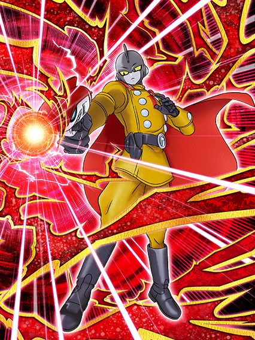
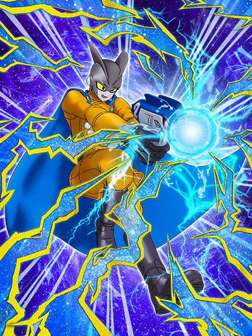
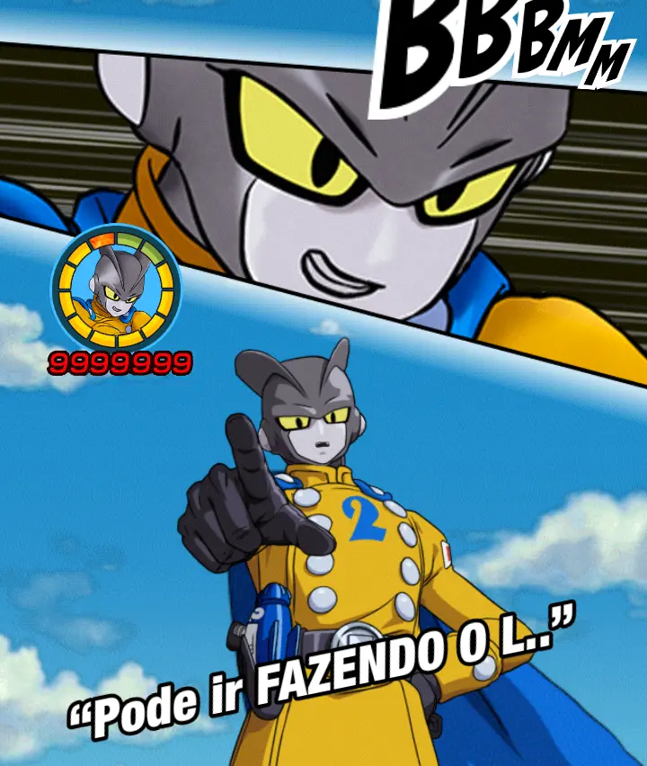

Estão 1 semana atrasados.
Eles decidiram atrasar o lançamento dos Gammas por 1 semana por causa do Halloween, vai entender né

Como é possível acertarem tanto num personagem?
Os gammas são simplesmente a rotação perfeita, eles compartilham 6/7 links, dão suporte um pro outro e ainda tem o papel certinho na partida, facilmente um dos melhores lançamentos na história do Dokkan.
Como eu disse, cada gamma tem seu papel na partida, e o Gamma 1 é o tank que fica no slot 1
Esse cara tem uma intro que dá defesa ativa por 4 turnos e isso é o suficiente pra ele, já que ele builda um monte de coisa e fica essencialmente invencível depois
Ele precisa levar 5 golpes, e nesses 5 golpes ele builda 100% de ATK e DEF e 50% de redução de dano, simplesmente insano
Normalmente ele é mais devagar no quesito dano, mas ele ainda tem 30% de chance de crítico e consegue dar um dano legal ainda assim
O foco desse cara é realmente a defesa, já que ele buildado completamente vira uma parede no slot 1, além de dar Ki e 30% de DEF pra todos aliados
Por sinal esse cara tem 70% de chance de counterar super attacks desarmados, que são raros mas existem
Honestamente esse counter já me salvou de umas coisas, então confie nele

MEU GOAT.
Bom, eu disse que os gammas tinham sua função e o Gamma 1 é o tank no turno, então já sabe né?
O Gamma 2 é uma máquina de dano absurda, focado 100% em ataques adicionais
Diferente do Gamma 1, o 2 builda atacando 5 vezes, e simplesmente atacando, não precisa necessariamente que sejam 5 super attacks, isso já é uma coisa muito boa por que ele consegue buildar super rápido também
Bom, o Gamma 2 também builda 100% de ATK e DEF, e ao invés de redução de dano, builda 50% de chance de crítico
Isso é bem fácil de buildar pq a intro dele dá 2 ataques adicionais garantidos por 4 turnos, além de ele ganhar um adicional com 70% de chance de ser super depois de atacar 5 vezes
E quando estiver buildado, o cara é simplesmente uma máquina de dano, já que depois da intro acabar, ele pode lançar até 3 supers no turno, todos com 50% de chance de critar, simplesmente absurdo
E caso você tenha ficado em dúvida sobre a defesa dele, fique tranquilo, pois pós super ela fica muito decente, e ele também tem 50% de chance de nulificar super attacks de Ki, então pode ficar tranquilo
E ele igualmente ajuda o Gamma 1, dando Ki e 30% de ATK, ou seja, eles realmente são perfeitos pra serem usados juntos
E com tudo isso dito, slk, as artes, animações lindas, kits muito fortes.. os gammas são um lançamento incrível demais cara
E o Gamma 2 é o goat pra mim, não tem como, personagem incrível demais
Por sinal, ele tem uma tela de K.O no super attack..

RAAAAAAAAAAAAAGHHHHHHHHHHHH
Você chegou ao fim dessa página!
Obrigado por ler tudo, e fica a vontade pra ver outras